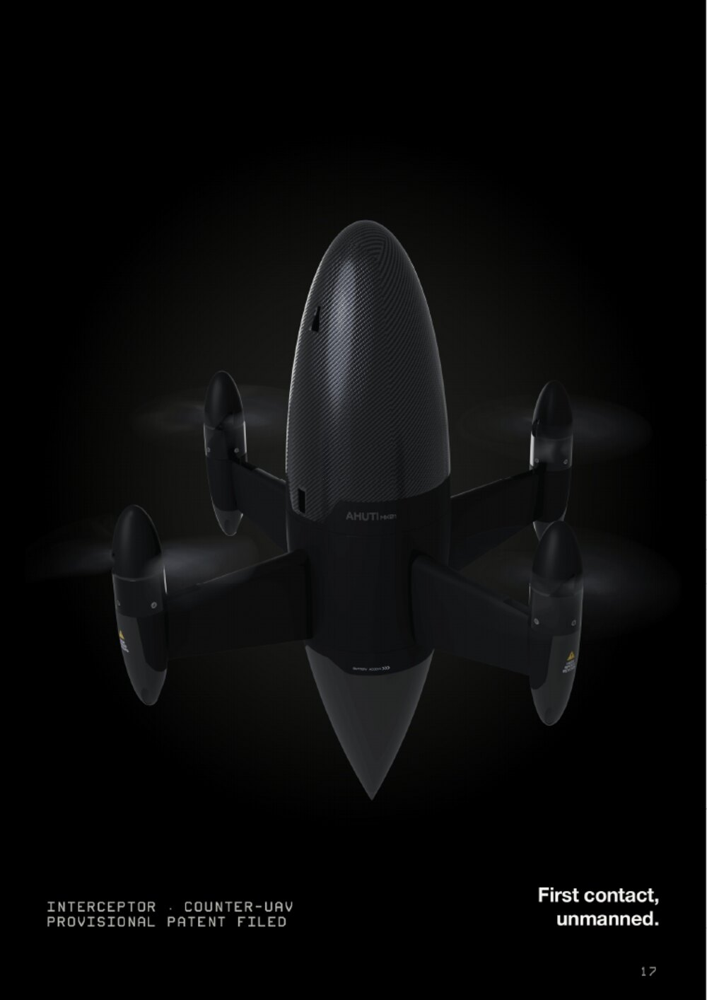
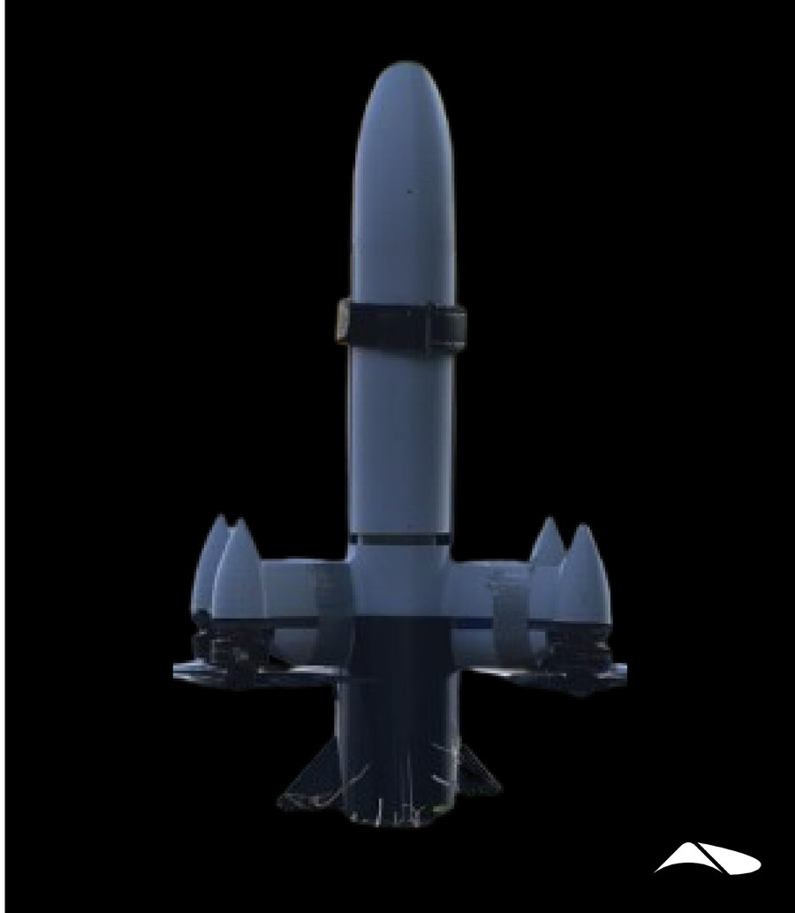

Ahuti Interceptor UAV
A high-speed, short-range interceptor built to take down a wide variety of aerial threats, including hostile reconnaissance drones and loitering munitions — at a cost that makes firing the round a rational decision rather than an accounting event.
Ahuti Mk-I baseline

What it intercepts
Ahuti answers the defensive half of the same problem Nightshade poses offensively. If a fast, cheap, attritable strike vehicle is the threat, then the counter has to be fast, cheap and attritable too — or the exchange ratio does the defender's job for the attacker.
| Target | Why Ahuti | Preferred kill mode |
|---|---|---|
| Hostile reconnaissance UAV | Small, slow, persistent; not worth an interceptor missile but must not be allowed to loiter | Kinetic strike |
| Loitering munitions | Arrive in numbers; each one must be engaged, so per-round cost dominates | Proximity blast |
| Fixed-wing one-way attack drones | High closure speed requires an interceptor that can actually reach the intercept point | Kinetic or proximity |
| Small rotary threats | Erratic, low-altitude, often in clutter | Kinetic strike |
| Point defence of high-value assets | Command posts, logistics hubs, radar sites, forward airfields | Either, per rules of engagement |
Deployment posture
- Operational readiness. Launches at a moment's notice with near-zero preparation time once a hostile target is detected.
- Radar integration. Cued onto the target by a ground-based radar during the midcourse phase, so the interceptor does not need to search.
- Terminal guidance. An onboard day/night seeker takes over in the terminal phase for a precise intercept.
- Kill options. Kinetic strike and proximity blast variants, so the same airframe can be used in environments where fragmentation is unacceptable.
Engagement sequence
Aerodynamics and structure
Ahuti Mk-II was shaped by one question: what does a drone look like when speed is the only constraint that matters?
The answer is an elliptical nose that flows into a parabolic tail, aerodynamically profiled arms, and NACA inlets that cut drag and recover pressure at the same time. Nothing on the vehicle is a straight tube because a straight tube at 90 m/s is a drag budget nobody can afford. Every curve earns its place.
The body is carbon fibre throughout, with a smart-infill internal structure that keeps mass down and rigidity up. Rigidity matters more than it does on a slower airframe: structural vibration cross-talk is one of the terms the physics backbone has to carry, and a floppy airframe pollutes the inertial measurements that the control policy depends on.
A flying prototype has been clocked at 337 km/h, and that number is expected to climb as the control policy recovers more of the physical envelope.

Control at the edge of the envelope
Ahuti is the product that most directly consumes the company's learned control work, because interception happens in exactly the flight region where conventional autopilots stop being valid. Near the physical limits of the airframe, motors and electronics:
- Thrust stops being proportional to rotor speed. The response goes non-linear well before the rail.
- Motor response becomes unpredictable. Beyond slew limits the behaviour is difficult to control near the steady state.
- Drag goes with the square of speed. From ~20 to 140 m/s that is fifty times the force, and it depends on wind, altitude, temperature and humidity.
- Roll, pitch and yaw stop being independent. Cross-axis coupling grows with rotational rate.
- Sensing clips. A 7 g pull plus vibration plus linear acceleration saturates a ±16 g accelerometer.
- Actuation saturates. All four motors sit on their limits, leaving no authority to reject a gust.
A conventional cascade — position, attitude, rate, mixer — assumes each stage has motor authority left for the next. At full throttle it does not, and the mixer is forced to sacrifice an axis to keep flying. Ahuti instead flies a direct-actuator reinforcement-learning policy at roughly 500 Hz, paired with a learned world model that reads recent telemetry for wind gusts, motor lag and battery sag and feeds that context to the policy continuously. Saturation, actuator lag and model error sit inside the simulator the policy optimises against, which is what makes it robust to them. Full detail: Near-envelope control.
The cost exchange
Defenders currently spend upwards of $4M per interceptor missile against systems costing a fraction of that — a cost asymmetry of roughly 36:1 in the attacker's favour. Jet UAVs exploit that imbalance at scale, and the same arithmetic is what makes cheap mass attractive to an adversary.
Ahuti's design constraint is therefore economic as much as kinematic: it must remain economically viable while preserving the reliability of a hard kill. A soft-kill jammer is cheaper but does not work against an inertially guided threat; an interceptor missile works but cannot be fired at every quadcopter that crosses a fence line. The interceptor UAV is the layer between them.
Ahuti is also the fastest-iterating airframe the company flies, which makes it the primary vehicle for advancing the control stack. Capability earned here transfers directly into the terminal phase of Nightshade and into every subsequent airframe, because the identification rig and training loop generalise even though the network weights do not.